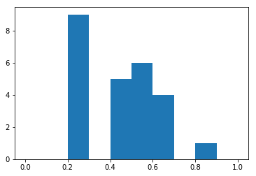
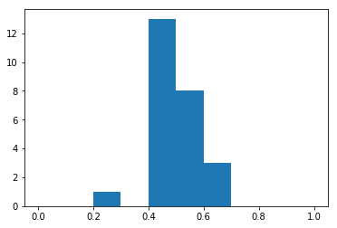
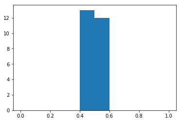
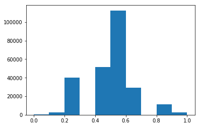
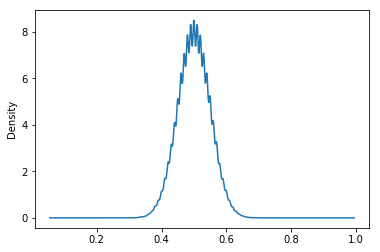

Sampling Distributions
Populations follow distributions, which are likelihoods of values we expect to see. Not to be confused with an individual sample, a sampling distribution is the distribution of a particular statistic (mean, median, etc) across multiple repeated samples of the same size from the same population.
But what effect does sampling have on what you can infer that from your population?
Does the ratio of “4 out of 5 dentists” that recommend something extrapolate to all dentists or would it be more accurate to say “4 out of the 5 dentists that we asked”?
Ex: Coin Flipping
There’s no real “population” of coin flips– you can perform the flip an infinite number of times, so it’d be impossible to gather all values and calculate the true population parameters. Nevertheless, we know that the distribution of a fair coin is 50⁄50.
But, for the sake of argument, say you only flipped one coin and recored that it landed on heads. That heads result obviously doesn’t extrapolate to every other coin. Or to put it differently, we can’t then infer that the “probability of getting heads is 100%,” based on the result of our one coin-flip.
Simulating a Lot of Coin Flips
Here, let’s assign the value 1 to any coin that lands on heads, and 0 for tails.
import numpy as np
%pylab inlinePopulating the interactive namespace from numpy and matplotlib
So we have a function that will give the sample proportion of a coin that was flipped n times
def coinflip_prop(n):
return np.random.randint(2, size=n).mean()coinflip_prop(10)0.40000000000000002
And build a way to sample that flip multiple times
def samples_of_coinflips(samples, nFlips):
return np.array([coinflip_prop(nFlips) for x in range(samples)])samples_of_coinflips(5, 10)array([ 0.5, 0.6, 0.3, 0.5, 0.4])
A Few Samples
We can take a look at what happens to the distribution of results, when we monitor the sample proportion.
For 25 samples of “fair coin flipped 10 times”, we get
tenFlips = samples_of_coinflips(25, 10)
_ = plt.hist(tenFlips, range=(0, 1))
tenFlips.mean(), tenFlips.std()(0.436, 0.18736061485808589)

And again
tenFlips = samples_of_coinflips(25, 10)
_ = plt.hist(tenFlips, range=(0, 1))
tenFlips.mean(), tenFlips.std()(0.47599999999999992, 0.110562199688682)

Big Sample Size
Whereas if we did 1000 flips, 25 times, we see that the average value for all flips is perfectly centered around the value we expect, .5
thousandFlips = samples_of_coinflips(25, 1000)
_ = plt.hist(thousandFlips, range=(0, 1))
thousandFlips.mean(), thousandFlips.std()(0.50087999999999999, 0.013865987162838432)

Thus, the larger your sample size, the less variability in your sampling distribution
A Lot of Samples
Conversely, if we only ever look at 10 flips at a time, but repeat that sample thousands of times
tenFlips = samples_of_coinflips(250000, 10)
_ = plt.hist(tenFlips, range=(0, 1))
tenFlips.mean(), tenFlips.std()(0.4997975999999999, 0.15809452563020646)

we find that the sampling distribution starts to look like a normal curve
A Lot of Both
Indeed, when we take a ton of samples, each sampling a lot of coin flips, we can see that the distribution of the sample mean follows a normal distribution
import pandas as pd
hundredFlips = samples_of_coinflips(250000, 100)
pd.Series(hundredFlips).plot(kind='density')
hundredFlips.mean(), hundredFlips.std()(0.50011791999999988, 0.049848230609256333)
